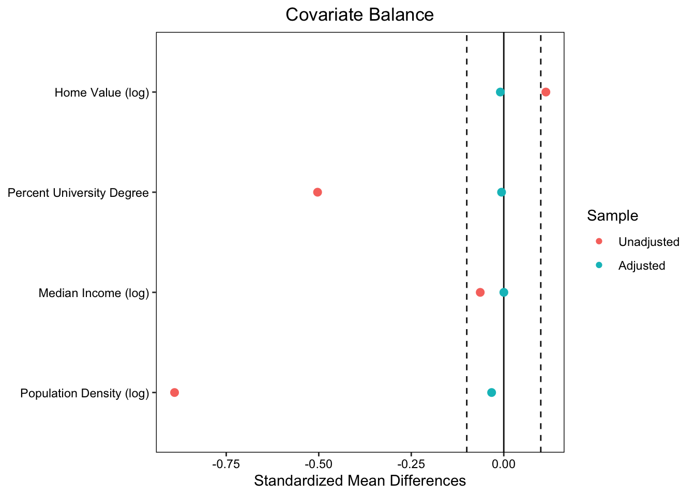
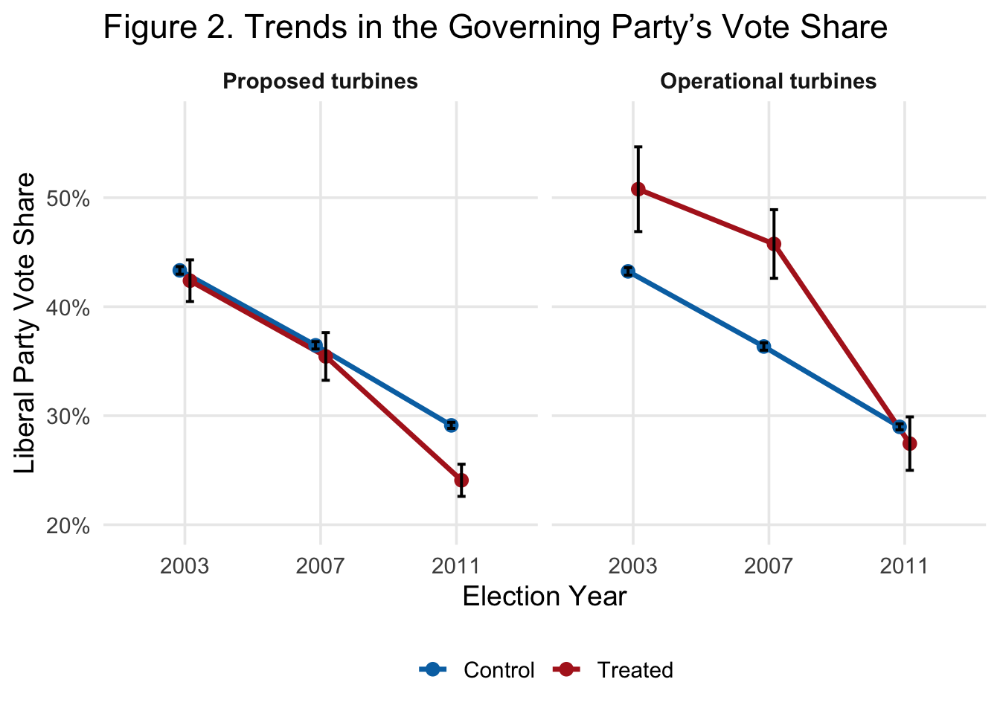

library(tidyverse)
library(here)
library(janitor)
library(jtools)
library(gtsummary)
library(gt)
library(MatchIt) # matching
library(cobalt) # balance + love plots
library(fixest) # fast fixed effects
library(scales) # plotting🌬️🗳 Assignment 2: Wind Turbines, Matching, and Difference-in-Differences
Replicate causal inference identification strategies in Stokes (2015)
Assignment instructions
Working with classmates to troubleshoot code and concepts is encouraged. If you collaborate, list collaborators at the top of your submission.
All written responses must be written independently (in your own words).
Keep your work readable: Use clear headings and label plot elements thoughtfully.
Assignment submission : Richard Montes Lemus
Introduction
In this assignment you will be doing political weather forecasting except the “storms” we care about are electoral swings that might follow local wind turbine development.
In Stokes (2015), the idea is that a policy with diffuse benefits (cleaner electricity) can create concentrated local costs (turbines nearby), and those local opponents may “send a signal” at the ballot box (i.e., NIMBYISM). Your job is to use two statistical tools:
- Matching: Can we create a more apples-to-apples comparison between precincts that did vs. did not end up near turbine proposals?
- Fixed effects + Difference-in-Differences: Can we use repeated elections to estimate how within-precinct changes in turbine exposure relate to changes in incumbent vote share?
Learning goal: Replicate the matching and fixed effects analyses from study:
Stokes (2015): “Electoral Backlash against Climate Policy: A Natural Experiment on Retrospective Voting and Local Resistance to Public Policy.
- Study: Stokes (2015) - Article
- Data source: Dataverse-Stokes2015
Setup: Load libraries
- Load libraries (+ install if needed)
Part 1: Study Background
1A. Dive into the details of the study design and evaluation plan
Goal: Get familiar with the study setting, environmental issue, and policy under evaluation.
1A.Q1 Summarize the environmental policy issue, the outcome of interest, and the intervention being evaluated. Be sure to include a brief description of each of the following key elements of the study: unit of analysis, outcome, treatment, comparison group):
Response: _________________________
Environmental Policy Issue:
In 2009, the Liberal government in Ontario Canada passed the Green Energy Act. This allows private corporations to build clean wind energy infrastructure without needing approval from local communities. Although a majority of people in Ontario supported clean energy, there were concentrated costs for local communities close to these projects. These communities sent a signal of disapproval by causing the Liberal government to lose seats at the upcoming election. This caused the government to hold back from building these projects.
Outcome of Interest:
The outcome of interest is Liberal party vote share in provincial elections.
Intervention Being Evaluated:
The intervention being evaluated is placing or proposing wind turbine projects in or near precincts.
Unit of Analysis:
Electoral precincts in the Ontario
Outcome treatment:
Precincts with proposed or built wind turbines.
Comparison group:
Precincts without proposed or built wind turbines
1A.Q2 Why might turbine proposals be correlated with baseline political preferences or rural areas? Provide 2 plausible mechanisms, and explain why that creates confounding.
Response: _________________________
Since wind turbines could only be built in rural areas this causes a confound. People who live in rural areas tend to be more conservative and might already plan to vote against policies commonly associated with liberal parties. Therefore, loss of liberal party voter share may be due to pre-existing trends in these rural areas that were already becoming more anti-liberal in the first place. This decline in liberal votes may be wrongly attributed to the wind turbine project when it’s actually a pre-existing political ideology trend.
Another confound would be that when wealthy developers were thinking about where to place these wind turbines, they purposely avoided wealthy and politically active communities. They might have anticipated these communities would protest and slow down the development project and decided to instead choose lower income and less politically active communities. This may mean the disapproval expressed through voting against the Liberal Party might not be caused by the turbines themselves, but rather reflects pre-existing characteristics of communities that got turbines.
1B. Break down the causal inference strategy and identify threats to identification:
1B.Q1 What is the key identifying assumption for a fixed effects / Difference-in-Difference design? Explain how this assumption when satisfied provides evidence of causal effect:
Response: _________________________
The key identifying assumption is that in the absence of treatment, the treated and control group would have experienced parallel trends over time. If both groups experienced the same trend in the absence of treatment, this indicated the treatment is responsible for the change in slope for the treated group and provides evidence of causal effect if the slope change is significant.
1B.Q2 What is the reason for using a fixed effects approach from a causal inference perspective? Summarize within the context of study (in your own words).
Response: _________________________
With a fixed effects approach we compare each precinct directly to itself over time and observe changes that same precinct experiences over time. This allows us to control for time-invariant differences that are bound to exists between different precincts in our study.
1B.Q3 What part of the SUTVA assumption is most likely violated in the context of this study design (and why)?
Response: _________________________
The SUTVA assumption requiring one unit’s treatment to not affect the outcome of another unit is being violated. When a turbine is placed in one precinct it doesn’t necessarily only affect that specific precinct. The fossil fuel job displacement caused by a wind turbine may affect many surrounding precinct workers since they are most likely spread out across various precincts. Furthermore, the mobilization efforts against wind turbines might not be contained to the precincts containing wind turbines, they may inspire allies from other precincts without wind turbines to vote in their favor.
1B.Q4 Why does spillover matter when estimating an unbiased treatment effect?
Response: _________________________
Spillover could cause the difference between between control and treated groups to seem smaller than they really are. This is because the control group could potentially vote similarly to the treatment group due to it being influenced by the treatment group - this could introduce bias.
1B.Q5 How do the authors assess the risk of spillovers, and what analytic choice do they make to attempt to mitigate the risk that spillover biases the causal estimate?
Response: _________________________
The authors assess the risk of spillover by testing for the statistical significance of the treatment for precincts within a 1km, 2km, 3km, 4km, and 5km radius from a wind turbine. They see a statistically significant voter decline in precincts that are 0-3km from the wind turbine and choose to assign precincts within a 3km buffer from a wind turbine to the treated group as opposed to just assigning precincts containing wind turbines to the treated group.
Part 2: Matching
We will start by evaluating the 2007 survey (cross-sectional) data. Treatment is defined by whether a precinct is near a turbine proposal (within 3 km).
Goal: Match precincts using pre-treatment covariates and then estimate the effect of proposed wind turbines on incumbent vote share.
2A. Load data for matching
- Read in data file
stokes15_survey2007.csv - Code
precinct_idanddistrict_idas factors - Take a look at the data
match_data <- read_csv(here("data", "stokes15_survey2007.csv")) %>%
mutate(precinct_id = as.factor(precinct_id),
district_id = as.factor(district_id))2A.Q1 Intuition check: Why match? Explain rationale for using this method.
Response: _________________________
We should match so that we make sure our treated precinct’s counter factual is as similar as possible for pre-treatment variables. This makes sure the difference we see between affected and unaffected precincts is due to the wind turbine construction and not some pre-existing differences in variables between them.
2B. Check imbalance (before matching)
- Create a covariate balance table comparing treated and control precincts
- Treatment indicator:
proposed_turbine_3km - Include pre-treatment covariates:
log_home_val_07,p_uni_degree,log_median_inc,log_pop_denc - Use the
tbl_summary()function from the{gtsummary}package.
match_data %>%
select(
proposed_turbine_3km,
log_home_val_07,
p_uni_degree,
log_median_inc,
log_pop_denc) %>%
tbl_summary(
by = proposed_turbine_3km,
statistic = list(
all_continuous() ~ "{mean} ({sd})",
all_categorical() ~ "{n} ({p}%)"
)
) %>%
modify_header(label ~ "**Covariate**") %>%
modify_spanning_header(c("stat_1", "stat_2") ~ "**Near Turbine**")| Covariate |
Near Turbine
|
|
|---|---|---|
| 0 N = 5,6191 |
1 N = 3541 |
|
| log_home_val_07 | 12.26 (0.37) | 12.29 (0.29) |
| p_uni_degree | 0.17 (0.12) | 0.13 (0.09) |
| log_median_inc | 10.32 (0.22) | 10.31 (0.19) |
| log_pop_denc | 5.12 (2.40) | 3.54 (1.78) |
| 1 Mean (SD) | ||
2B.Q1 Summarize the table output: Which covariates look balanced/imbalanced?
Response: _________________________
For my control and treatment groups, the log_home_val_07 and log_median_inc variables seem to be pretty balanced, the p_uni_degree variable difference is moderate, and the log_pop_denc variable is severely unbalanced.
2B.Q2 Describe in your own words why these covariates might be expected to confound the treatment estimate:
Response (2-4 sentences): _________________________
The proportion with university degrees (p_uni_degree) and population density (log_pop_denc) could both confound the treatment estimate because they’re associated with political preferences. Precincts with higher proportions of university graduates tend to vote more liberal, while rural precincts with a lower population density tend to vote less liberal. This could mean the differences we see between our control and treatment group is due to these pre-existing differences and not necessarily wind turbines.
2B.Q3 Intuition check: What type of data do you need to conduct a matching analysis?
Response: _________________________
You need to have a lot of pre-treatment covariates and a lot of control data relative to treated data.
Conduct matching estimation using the {MatchIt} package:
Learning goals:
- Approximate the Mahalanobis matching method used in Stokes (2015)
- Implement another common matching approach called
propensity score matching
2C. Mahalanobis nearest-neighbor matching
- Conduct Mahalanobis matching
- Use nearest-neighbor match without replacement using Mahalanobis distance
- Use 1-to-1 matching (match one control unit to each treatment unit)
- Extract the matched data using
match.data()
set.seed(2412026)
match_model <- matchit(proposed_turbine_3km ~ log_home_val_07 +
p_uni_degree +
log_median_inc +
log_pop_denc,
data = match_data,
method = "nearest", # Nearest neighbor matching
distance = "mahalanobis", # Mahalanobis distance
ratio = 1, # Match one control unit to one treatment unit (1:1 matching)
replace = FALSE # Control observations are not replaced
)
# Extract matched data
matched_data <- match.data(match_model)summary(match_model)
Call:
matchit(formula = proposed_turbine_3km ~ log_home_val_07 + p_uni_degree +
log_median_inc + log_pop_denc, data = match_data, method = "nearest",
distance = "mahalanobis", replace = FALSE, ratio = 1)
Summary of Balance for All Data:
Means Treated Means Control Std. Mean Diff. Var. Ratio
log_home_val_07 12.2948 12.2620 0.1138 0.5941
p_uni_degree 0.1257 0.1688 -0.5032 0.4916
log_median_inc 10.3096 10.3219 -0.0636 0.7581
log_pop_denc 3.5398 5.1192 -0.8897 0.5474
eCDF Mean eCDF Max
log_home_val_07 0.0382 0.0881
p_uni_degree 0.1032 0.1769
log_median_inc 0.0355 0.0750
log_pop_denc 0.2099 0.3713
Summary of Balance for Matched Data:
Means Treated Means Control Std. Mean Diff. Var. Ratio
log_home_val_07 12.2948 12.2975 -0.0093 1.0063
p_uni_degree 0.1257 0.1262 -0.0060 1.0485
log_median_inc 10.3096 10.3096 0.0002 1.0403
log_pop_denc 3.5398 3.5982 -0.0329 0.9784
eCDF Mean eCDF Max Std. Pair Dist.
log_home_val_07 0.0075 0.0282 0.1334
p_uni_degree 0.0088 0.0367 0.1642
log_median_inc 0.0073 0.0395 0.1225
log_pop_denc 0.0109 0.0508 0.1485
Sample Sizes:
Control Treated
All 5619 354
Matched 354 354
Unmatched 5265 0
Discarded 0 02C.Q1 Using the summary() output: Which covariate had the largest and smallest Std. Mean Diff. before matching. Next, compare largest/smallest Std. Mean Diff. after matching.
Response: _________________________
Largest Std. Meal Diff Before Matching
- log_pop_denc
Smallest Std. Meal Diff Before Matching
- log_median_inc
After matching log_pop_denc still has the largest Std but it is much smaller (-0.8897 vs -0.0329). log_median_inc still has the smallest Std but is even smaller (-0.0636 vs 0.0002) - we now see a near perfect match for this variable.
2D. Create a “love plot” using love.plot() ❤️
- Plot mean differences for data before & after matching across all pre-treatment covariates
- This is an effective way to evaluate how effective matching was at achieving balance.
- Make a love plot of standardized mean differences (SMDs) before vs after matching.
- Include a threshold line at 0.1.
- In love plot display
mean.diffs
new_names <- data.frame(
old = c("log_home_val_07", "p_uni_degree", "log_median_inc", "log_pop_denc"),
new = c("Home Value (log)", "Percent University Degree",
"Median Income (log)", "Population Density (log)"))
# Love plot
love.plot(match_model, stats = "mean.diffs",
thresholds = c(m = 0.1),
var.names = new_names)
2D.Q1 Interpret the love plot in your own words:
Response: _________________________
The love plot shows the standardized mean differences between the control and treatment of our covariates decreased significantly after we matched treatments to their closest counterfactual.
Propensity score matching
2E. Propensity Score Matching (PSM)
- Estimate 1:1 nearest-neighbor Propensity Score Matching
- Same code as above except change
distance = "logit"
set.seed(2412026)
propensity_scores <- matchit(proposed_turbine_3km ~ log_home_val_07 +
p_uni_degree +
log_median_inc +
log_pop_denc,
data = match_data,
method = "nearest", # Nearest neighbor matching
distance = "logit", # logit distance
ratio = 1, # Match one control unit to one treatment unit (1:1 matching)
replace = FALSE # Control observations are not replaced
)Create table displaying covariate balance using cobalt::bal.tab()
Use bal.tab() to report balance before and after matching.
bal.tab(propensity_scores,
un = TRUE,
var.names = new_names) Balance Measures
Type Diff.Un Diff.Adj
distance Distance 0.7248 0.0001
log_home_val_07 Contin. 0.1138 0.0205
p_uni_degree Contin. -0.5032 0.0457
log_median_inc Contin. -0.0636 -0.0042
log_pop_denc Contin. -0.8897 -0.0365
Sample sizes
Control Treated
All 5619 354
Matched 354 354
Unmatched 5265 02E.Q1 Compare Mahalanobis vs propensity score matching. Which method did a better job at achieving balance?
Response: _________________________
Mahalanobis had a smaller standard mean difference across all covariates. Because of this, Mahalanobis did a better job at achieving balance.
2F. Estimate an effect in the matched sample
Using the matched data (Mahalanobis method), estimate the effect of treatment on the change in incumbent vote share (change_liberal).
reg_match <- lm(change_liberal ~ proposed_turbine_3km,
data = matched_data,
weights = weights)
summ(reg_match, model.fit = FALSE)| Observations | 708 |
| Dependent variable | change_liberal |
| Type | OLS linear regression |
| Est. | S.E. | t val. | p | |
|---|---|---|---|---|
| (Intercept) | -0.07 | 0.01 | -10.96 | 0.00 |
| proposed_turbine_3km | -0.06 | 0.01 | -7.25 | 0.00 |
| Standard errors: OLS |
2F.Q1 Have you identified a causal estimate using this approach: Why or why not?
Response: _________________________
Assumption that I have balanced relevant confounding variables, I have found a causal estimate using this approach. Since I matched treatment groups to their closest control match, this minimized group differences that are not due to proximity to wind turbines. This isolated the effect of proximity to wind turbines. The coefficient for this variable was found to be statistically significant coefficient, suggesting proximity to turbines is associated with a 6% decline in Liberal vote share.
2F.Q2 When using a matching method, what is the main threat to causal identification?
Response: _________________________
The main threat is that matching alone does not address potential selection bias coming from variables that were not observed.
2F.Q3 Describe why the treatment estimate represents the Average Treatment for the Treated (ATT) and explain why this is the case relative to estimation of the Average Treatment Effect (ATE).
Response: _________________________
It represents the ATT because the treatment estimate comes from the effect of the treatment on the 354 treated precincts relative to the matched 354 control precincts - not the full sample of over 5,000 control precincts. This means we’re only estimating the effect of turbines on precincts for 354 matched groups. If we had estimated the effect of this treatment on all the precinct in our model this would have given us ATE.
Part 3: Panel Data, Fixed Effects, and Difference-in-Difference
Data source: Dataverse-Stokes2015
3A: Read in the panel data + code variables precinct_id and year as factors
panel_data <- read_csv(here("data", "Stokes15_panel_data.csv")) %>%
mutate(precinct_id = as.factor(precinct_id),
year = as.factor(year))
# HINT: Try running `tabyl(panel_data$year)`. Review article to make sense of the row numbers (n).
tabyl(panel_data$year) panel_data$year n percent
2003 6186 0.3333333
2007 6186 0.3333333
2011 6186 0.33333333A.Q1: Why are there 18,558 rows in panel_data?
Response: _________________________
There were 18,558 rows in panel_data because there are 6186 precincts and this data is collected once a year across three years. 18,558 is simply the result of 6186 three times.
# How many years are included in the panel?
# How many precincts are there? 3A.Q2: How many unique precincts are ever treated (i.e., proposed & operational)?
Response: _________________________
There are 184 unique precincts ever treated in the proposed category and 52 unique precincts ever treated in the operational category.
panel_data %>%
group_by(precinct_id) %>%
summarise(
ever_proposed = any(proposed_turbine == 1, na.rm = TRUE),
ever_operational = any(operational_turbine == 1, na.rm = TRUE),
.groups = "drop") %>%
summarise(
n_ever_proposed = sum(ever_proposed),
n_ever_operational = sum(ever_operational))# A tibble: 1 × 2
n_ever_proposed n_ever_operational
<int> <int>
1 184 523B. Plot and evaluate parallel trends: Replicate Figure.2 (Stokes, 2015)
- Create indicators for whether each precinct is ever treated by 2011 (
treat_p,treat_o; separate indicator for proposals and operational turbines). - Plot mean incumbent vote share by year for treated vs control precincts (with 95% CIs).
- Facet by turbine type (proposed & operational)
Step 1: Prepare data
trends_data <- panel_data %>%
group_by(precinct_id) %>%
mutate(
treat_p = as.integer(any(proposed_turbine == 1, na.rm = TRUE)), # ever proposed (in any year)
treat_o = as.integer(any(operational_turbine == 1, na.rm = TRUE))) %>% # ever operational (in any year)
ungroup() %>%
pivot_longer(c(treat_p, treat_o),
names_to = "turbine_type", values_to = "treat") %>%
mutate(
turbine_type = factor(turbine_type,
levels = c("treat_p", "treat_o"),
labels = c("Proposed turbines", "Operational turbines")),
status = if_else(treat == 1, "Treated", "Control"),
year = factor(year))Step 2: Create trends plot
pd <- position_dodge(width = 0.15)
trends_data %>%
group_by(turbine_type, status, year) %>%
summarise(
mean = mean(perc_lib, na.rm = TRUE),
n = sum(!is.na(perc_lib)),
se = sd(perc_lib, na.rm = TRUE) / sqrt(n),
ci = qt(.975, df = pmax(n - 1, 1)) * se,
.groups = "drop") %>%
ggplot(aes(year, mean, color = status, group = status)) +
geom_line(position = pd, linewidth = 1.2) +
geom_point(position = pd, size = 2.6) +
geom_errorbar(
aes(ymin = mean - ci, ymax = mean + ci),
position = pd, width = .12, linewidth = .7, color = "black") +
facet_wrap(~ turbine_type, nrow = 1) +
scale_color_manual(values = c(Control = "#0072B2", Treated = "#B22222")) +
scale_y_continuous(labels = percent_format(accuracy = 1)) +
coord_cartesian(ylim = c(.20, .57)) +
labs(
title = "Figure 2. Trends in the Governing Party’s Vote Share",
x = "Election Year",
y = "Liberal Party Vote Share",
color = NULL) +
theme_minimal(base_size = 14) +
theme(
panel.grid.minor = element_blank(),
legend.position = "bottom",
strip.text = element_text(face = "bold"))
3B.Q1: Write a short paragraph assessing the parallel trends assumption for each outcome.
Response (4-6 sentences): _________________________
For the proposed turbines group, the parallel trends assumption seems well satisfied. The pre-treatment period for the control and treatment groups seem to match up well and the treated group seems to experience a decline following the introduction of the turbine proposal. For the operational turbines group, the parallel trends assumption is not satisfied as well. During the pre-treatment period for the control and treatment groups, it seems that the treated group starts at a higher initial liberal party vote share than the control group. Regardless, we also see a decline following the introduction of the turbine proposal for operational turbine precincts.
Estimating Fixed Effects Models (DiD) for proposals
\[ \text{Y}_{it} = \alpha_0 + \beta \cdot (\text{proposed_turbine}_{it}) + \gamma_i + \delta_t + \varepsilon_{it} \]
- \(Y_{it}\) is the vote share for the Liberal Party in precinct i in time t
- \(\beta\) is the treatment effect of a turbine being proposed within a precinct
- \(\gamma_i\) is the precinct fixed effect
- \(\delta_t\) is the year fixed effect
Example 1: Randomly sample 40 precincts
- To illustrate the “dummy variable method” of estimating fixed effects using the the general
lm()function we are going to randomly sample 40 precincts (20 “treated” precincts with proposed turbines). - If we attempted to use this approach with the full sample estimating all 6185 (n-1) precinct-level coefficients is impractical (it would take a long time).
set.seed(40002026)
precinct_frame <- panel_data %>%
group_by(precinct_id) %>%
summarise(
proposed_turbine_any = as.integer(any(proposed_turbine == 1, na.rm = TRUE)),
.groups = "drop"
)
ids_40 <- precinct_frame %>%
group_by(proposed_turbine_any) %>%
slice_sample(n = 20) %>%
ungroup() %>%
select(precinct_id)
sample_40_precincts <- panel_data %>%
semi_join(ids_40, by = "precinct_id")3C: Estimate a fixed effects model using lm() with fixed effects added for precinct and year using the sample of 40 precincts just created.
model1_ff <- lm(perc_lib ~ proposed_turbine +
precinct_id +
year,
data = sample_40_precincts)summ(model1_ff , model.fit = FALSE, digits = 3)| Observations | 120 |
| Dependent variable | perc_lib |
| Type | OLS linear regression |
| Est. | S.E. | t val. | p | |
|---|---|---|---|---|
| (Intercept) | 0.275 | 0.050 | 5.460 | 0.000 |
| proposed_turbine | -0.057 | 0.031 | -1.858 | 0.067 |
| precinct_id10.115s.10.84. | 0.166 | 0.069 | 2.402 | 0.019 |
| precinct_id105.038.105.45. | 0.053 | 0.069 | 0.765 | 0.447 |
| precinct_id14.149.14.79. | 0.208 | 0.070 | 2.976 | 0.004 |
| precinct_id14.168.14.82. | 0.192 | 0.070 | 2.749 | 0.007 |
| precinct_id18.003.18.1. | 0.121 | 0.070 | 1.738 | 0.086 |
| precinct_id18.033.18.19. | -0.002 | 0.072 | -0.034 | 0.973 |
| precinct_id21.126.21.179. | 0.204 | 0.069 | 2.950 | 0.004 |
| precinct_id22.061.22.60. | 0.213 | 0.070 | 3.047 | 0.003 |
| precinct_id22.124.22.52. | 0.156 | 0.070 | 2.230 | 0.029 |
| precinct_id22.137.22.193. | 0.179 | 0.069 | 2.590 | 0.011 |
| precinct_id22.158.22.203. | 0.165 | 0.070 | 2.357 | 0.021 |
| precinct_id22.209.22.172. | 0.188 | 0.070 | 2.699 | 0.009 |
| precinct_id28.056.28.149. | -0.011 | 0.070 | -0.160 | 0.873 |
| precinct_id28.072.28.98. | 0.097 | 0.069 | 1.409 | 0.163 |
| precinct_id28.139.28.145. | 0.040 | 0.072 | 0.553 | 0.582 |
| precinct_id28.163.28.69. | 0.124 | 0.069 | 1.802 | 0.075 |
| precinct_id29.241.29.172. | 0.067 | 0.070 | 0.958 | 0.341 |
| precinct_id34.050.34.39. | 0.342 | 0.069 | 4.947 | 0.000 |
| precinct_id34.151.34.125. | 0.098 | 0.070 | 1.399 | 0.166 |
| precinct_id36.133.36.92. | 0.358 | 0.069 | 5.179 | 0.000 |
| precinct_id40.044.40.68. | 0.236 | 0.072 | 3.275 | 0.002 |
| precinct_id40.098.40.120. | 0.195 | 0.070 | 2.792 | 0.007 |
| precinct_id40.134.40.174. | 0.216 | 0.069 | 3.127 | 0.002 |
| precinct_id40.243.40.22. | 0.325 | 0.070 | 4.651 | 0.000 |
| precinct_id40.244.40.46. | 0.178 | 0.070 | 2.543 | 0.013 |
| precinct_id55.228.55.180. | 0.130 | 0.069 | 1.883 | 0.064 |
| precinct_id58.162.58.98. | 0.278 | 0.069 | 4.024 | 0.000 |
| precinct_id58.232.58.231. | 0.203 | 0.069 | 2.940 | 0.004 |
| precinct_id67.141.67.123. | 0.022 | 0.070 | 0.311 | 0.757 |
| precinct_id69.073.69.35. | 0.070 | 0.069 | 1.015 | 0.313 |
| precinct_id70.081.70.44. | 0.062 | 0.069 | 0.899 | 0.372 |
| precinct_id70.135.70.105. | 0.441 | 0.069 | 6.388 | 0.000 |
| precinct_id70.221.70.155. | 0.247 | 0.069 | 3.576 | 0.001 |
| precinct_id73.248.73.180. | 0.187 | 0.070 | 2.672 | 0.009 |
| precinct_id73.251.73.180. | 0.204 | 0.070 | 2.927 | 0.005 |
| precinct_id87.017.87.58. | 0.127 | 0.069 | 1.836 | 0.070 |
| precinct_id87.053.87.68. | 0.214 | 0.069 | 3.100 | 0.003 |
| precinct_id87.213.87.24. | 0.033 | 0.070 | 0.469 | 0.641 |
| precinct_id98.009.98.12. | 0.129 | 0.069 | 1.868 | 0.066 |
| year2007 | -0.045 | 0.019 | -2.364 | 0.021 |
| year2011 | -0.131 | 0.024 | -5.381 | 0.000 |
| Standard errors: OLS |
3C.Q1: Intuition check: Is the signal-to-noise ratio for the treatment estimate greater than 2-to-1?
Response: _________________________
HINT: Add the argument
digits = 3to thesumm()function aboveNo, the signal-to-noise ratio for the treatment estimate is not greater than 2 - 1. It is not significant.
3C.Q2: Re-run the summ() function using the heteroscedasticiy robust standard error adjustment (robust = TRUE). Did the standard error (S.E.) estimates change? Explain why.
Response: _________________________
Yes the standard error became larger. This is because using the heteroscedasticiy robust standard error adjustment allows for variance in the standard error across observations. This causes more variation in standard errors than the previous calculation which assumed a constant variance.
summ(model1_ff , model.fit = FALSE, digits = 3, robust = TRUE)| Observations | 120 |
| Dependent variable | perc_lib |
| Type | OLS linear regression |
| Est. | S.E. | t val. | p | |
|---|---|---|---|---|
| (Intercept) | 0.275 | 0.085 | 3.247 | 0.002 |
| proposed_turbine | -0.057 | 0.039 | -1.465 | 0.147 |
| precinct_id10.115s.10.84. | 0.166 | 0.101 | 1.646 | 0.104 |
| precinct_id105.038.105.45. | 0.053 | 0.104 | 0.509 | 0.612 |
| precinct_id14.149.14.79. | 0.208 | 0.094 | 2.201 | 0.031 |
| precinct_id14.168.14.82. | 0.192 | 0.110 | 1.751 | 0.084 |
| precinct_id18.003.18.1. | 0.121 | 0.107 | 1.132 | 0.261 |
| precinct_id18.033.18.19. | -0.002 | 0.101 | -0.024 | 0.981 |
| precinct_id21.126.21.179. | 0.204 | 0.157 | 1.299 | 0.198 |
| precinct_id22.061.22.60. | 0.213 | 0.105 | 2.023 | 0.047 |
| precinct_id22.124.22.52. | 0.156 | 0.103 | 1.509 | 0.135 |
| precinct_id22.137.22.193. | 0.179 | 0.104 | 1.721 | 0.089 |
| precinct_id22.158.22.203. | 0.165 | 0.088 | 1.879 | 0.064 |
| precinct_id22.209.22.172. | 0.188 | 0.106 | 1.770 | 0.081 |
| precinct_id28.056.28.149. | -0.011 | 0.112 | -0.099 | 0.921 |
| precinct_id28.072.28.98. | 0.097 | 0.104 | 0.934 | 0.353 |
| precinct_id28.139.28.145. | 0.040 | 0.111 | 0.359 | 0.721 |
| precinct_id28.163.28.69. | 0.124 | 0.106 | 1.179 | 0.242 |
| precinct_id29.241.29.172. | 0.067 | 0.089 | 0.749 | 0.456 |
| precinct_id34.050.34.39. | 0.342 | 0.089 | 3.821 | 0.000 |
| precinct_id34.151.34.125. | 0.098 | 0.093 | 1.050 | 0.297 |
| precinct_id36.133.36.92. | 0.358 | 0.091 | 3.941 | 0.000 |
| precinct_id40.044.40.68. | 0.236 | 0.096 | 2.457 | 0.016 |
| precinct_id40.098.40.120. | 0.195 | 0.092 | 2.123 | 0.037 |
| precinct_id40.134.40.174. | 0.216 | 0.090 | 2.399 | 0.019 |
| precinct_id40.243.40.22. | 0.325 | 0.098 | 3.314 | 0.001 |
| precinct_id40.244.40.46. | 0.178 | 0.095 | 1.873 | 0.065 |
| precinct_id55.228.55.180. | 0.130 | 0.092 | 1.406 | 0.164 |
| precinct_id58.162.58.98. | 0.278 | 0.097 | 2.867 | 0.005 |
| precinct_id58.232.58.231. | 0.203 | 0.092 | 2.203 | 0.031 |
| precinct_id67.141.67.123. | 0.022 | 0.115 | 0.189 | 0.850 |
| precinct_id69.073.69.35. | 0.070 | 0.104 | 0.677 | 0.500 |
| precinct_id70.081.70.44. | 0.062 | 0.095 | 0.655 | 0.514 |
| precinct_id70.135.70.105. | 0.441 | 0.128 | 3.451 | 0.001 |
| precinct_id70.221.70.155. | 0.247 | 0.111 | 2.217 | 0.030 |
| precinct_id73.248.73.180. | 0.187 | 0.108 | 1.720 | 0.089 |
| precinct_id73.251.73.180. | 0.204 | 0.102 | 1.995 | 0.050 |
| precinct_id87.017.87.58. | 0.127 | 0.112 | 1.135 | 0.260 |
| precinct_id87.053.87.68. | 0.214 | 0.150 | 1.428 | 0.157 |
| precinct_id87.213.87.24. | 0.033 | 0.087 | 0.375 | 0.709 |
| precinct_id98.009.98.12. | 0.129 | 0.107 | 1.210 | 0.230 |
| year2007 | -0.045 | 0.024 | -1.876 | 0.064 |
| year2011 | -0.131 | 0.036 | -3.686 | 0.000 |
| Standard errors: Robust, type = HC3 |
3C.Q3: Compare results of the model above to the findings from the fixed effects analysis in the Stokes (2015) study. Why might the results be similar or different?
Response: _________________________
The model above estimates the average effect of having a proposed wind turbine to be go down by 5.7%. The findings from the fixed effects analysis, on the other hand, show this to be a decrease of about 4%. Results could be different because I accounted for variance in standard error in my model and this caused large differences in this percentage.
3C.Q4: In your own words, explain why it is advantageous from a causal inference perspective to include year and precinct fixed effects. Explain how between-level and within-level variance is relevant to the problem of omitted variable bias (OVB).
Response (2-4 sentences): _________________________
Including year and precinct fixed effects is advantageous because including year absorbs common shocks shared by all precincts in a given year. Including precinct fixed effects absorbs time-invariant differences across precincts. By focusing on within-level variance this model reduced OVB that could potentially happen if you failed to measure a confounding variable.